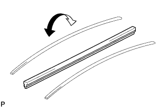
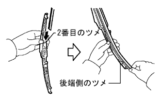
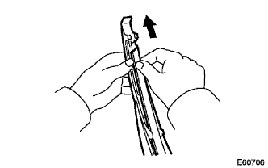
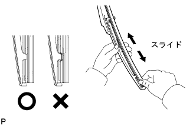
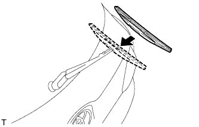

Rear Wiper Rubber Installation |
| 1. Install Rear Wiper Rubber |
 |
Install the rear wiper rubber to the rear wiper rubber backing plate as shown in the illustration.
 |
Insert the rear wiper rubber from the 2th claw from the tip of the rear wiper blade toward the rear end.
 |
After passing the rear wiper rubber through the claws on the rear end side, let it protrude past the stopper on the rear end side, then pass it through the claws on the tip side.
 |
Check that the claws of the rear wiper blade are in the grooves of the rear wiper rubber.
| 2. Install Rear Wiper Blade |
 |
Engage the claw and install the rear wiper blade.